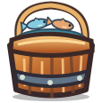
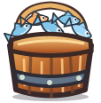
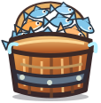

Храбролап — проверка ассетов v0.9.6
Это отдельный стенд, не новый игровой экран. В самой игре ведро находится слева от рыцаря, а котёнок спит в разрезе существующего дома.
Ведро — состояния

1–4
5–7
7–24 (улучшено)Сон — 6 оригинальных поз без брони

Кадр 1/6